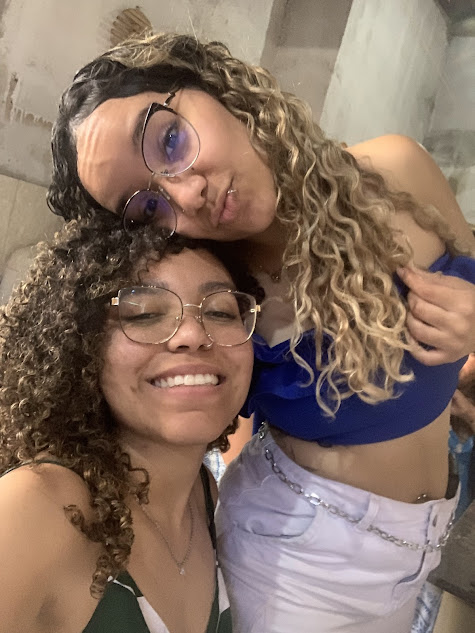
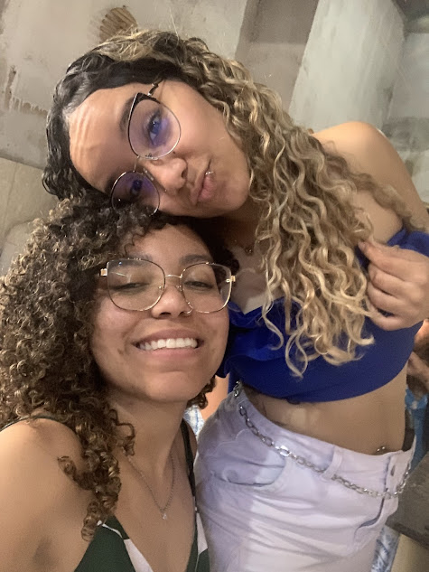
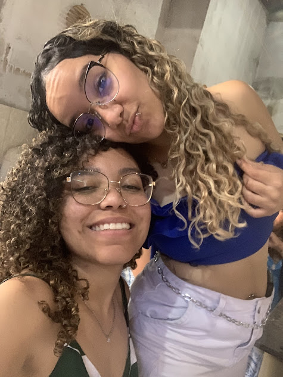

Galeria de Fotos
 

Vivemos no mesmo ambiente por meses, mas sem nenhum contato realmente, nossos caminhos se cruzaram de verdade no mês de Maio. Você implicando comigo, me perturbando, me chamando, tentando chamar minha atenção, e eu sem entender nada, sem saber o que fazer, sem saber como agir.
Até que você postou uma foto de um buquê de flores e eu curti te zombando. A partir desse momento começamos a conversar no dia 09 de Maio de 2025. Começamos a conversar, conversar, conversar, te mandei o meu número e começamos a nos aprofundar mais, vimos que tÃnhamos algumas questões em comum, gostos parecidos.
Um dia estava indo embora do trabalho eu ja estava no terminal e você me mandou uma mensagem, me chamando para ir no shopping, eu na dúvida se iria, mas acabei indo. Fui até você, e ficamos horas conversando, lembro que ficamos até as 20:00.
A partir desse dia, isso virou rotina, porem ainda tinhamos algumas questão que nos atormentavam, eu recem solteira em um relacionamento que acabou comigo, e você em um impasse com uma pessoa.
As entidades já tinham me informado sobre você, cada dia que passava eu tinha mais convicção de que era você que eles tinham me informado, e os seus guias tambem informaram sobre mim, eu sabia des do dia que você avia me contato sobre o que ele disseram, e você ainda não tinha se tocado.
Eu finalmente puxei tu para te dar um beijo atrás do correio, outro dia nos encontramos no CAT e ficamos nos carinhando por la, eu senti que precisava de ti naquele momento, mas tinha medo. Ainda mais quando tu disse que não queria nada comigo, fiquei revoltada.
Até um dia ir ao terreiro e a entidade vir em mim e falar que o que eu queria eu iria ter, e só passaram duas coisas na minha cabeça você e a moto.
Um dia a gente indo para o seu curso como o de costume, tu jogando indiretas sobre qual o tamanho do seu dedo, aliança e relacionamento, em pleno dia 12 de junho. Eu pensei "essa menina quer namorar comigo e não está sabendo pedir", nisso com um gesto de impulsividade te pedi em namoro. No entanto, por não gostar da forma que foi, decide revogar o meu pedido e refaze-lo, você ficou putassa.
Dia 19, você me mandou uma foto se declarando e dizendo que me ama, eu sem reação não sabia o que dizer, o que pensar, mas... no dia 21 de junho te chamei para sair, você em misto de ansiedade, já sabendo o que viria, não aguentava esperar, então finalmente te pedi em namoro, no quintal 61 e você aceitou. Dia 26 de julho te dei a aliança. Desde então não nos largamos mais, cada dia que passa eu te amo mais, você é a melhor coisa que me aconteceu.
0 dias

Você TEm sido a melhor escolha da minha VIda. Não me arrependo de nenhum momento ao seu lado. Cada dia que passa, meu amor por VOcê só cresce. Você é minha inspiração, minha alegria e meu tudo. Obrigado por ser quem você é e por me fazer tão feliz. Te amo mais do que palavras podem expressar. 💙 O melhor lugar do mundo é ao seu lado. Feliz aniversário de namoro! Que venham muitos mais meses juntas, repletos de amor, cumplicidade e felicidade. Agradeço a Deus e às entidades por ter colocado você no meu caminho. Você é um presente precioso que eu valorizo todos os dias. Que nosso amor continue a florescer e a nos guiar em cada passo que damos juntas. O seu carinho e amor me moldam a cada dia. 💙 Eu te quero, te desejo, te venero, te sinto, isso porque tu é tu. EuTeAmo! 💙